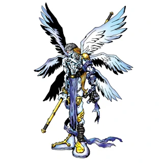

Agumon

É um Digimon Réptil que desenvolveu bipedismo e tem a aparência de um pequeno dinossauro. Por ainda estar a caminho da fase adulta, o seu poder é reduzido, no entanto, a sua personalidade é muito feroz, pelo que não entende o medo. Cresceram-lhe afiadas e robustas garras em ambas as mãos e pés, cujo poder demonstra em batalha. Também prediz a evolução para um grande e poderoso Digimon. O seu movimento especial é cuspir fogo da boca para atacar o oponente (Baby Flame).
Angemon
Um Digimon Anjo com seis asas brilhantes, cujo corpo é revestido com um tecido de tão puro branco que parece divino. Nas várias vezes em que o Digital World é visitado por uma crise, é dito que ele desce para liderar Digimons da mesma espécie. Devimon, que foi conquistado pelo lado negro, era originalmente desta espécie. O seu movimento especial consiste em golpear o adversário com o seu punho a brilhar dourado (Heaven's Knuckle).
Tailmon

Imensamente curioso, adora partidas. Apesar do seu pequeno porte, é um precioso Digimon das Espécies Sagradas cuja aparência não combina com a força que possui. Porta um Holy Ring, a prova de que é uma Espécie Sagrada, na cauda, e se o perder, o seu poder diminuirá e não conseguirá demonstrar o potencial original. Defende-se com garras longas copiadas dos dados de SaberLeomon. Os seus movimentos especiais consistem em usar as longas garras para atacar o adversário (Neko Punch) e manipular o oponente com um olhar penetrante (Cat's Eye). Aqueles que forem vítima deste olhar atacar-se-ão a si mesmos.
LadyDevimon

Um Digimon Anjo feminino de nobre estatura. Por esconder um poder do lado escuro incomparavelmente puro, diz-se que as chances de singrar a longo prazo em computadores pessoas são "zero". O seu movimento especial é Darkness Wave, no qual liberta incontáveis criaturas das trevas semelhantes a morcegos que queimam completamente o adversário. Noutro movimento especial, Poison, usa Dark Energy para inverter a fase de uma capacidade própria do oponente, destruindo-o por dentro. Quanto mais poderoso for o adversário, mais completa a técnica é.
Rafflesimon

Um Digimon Fada de nível Final dito ser a maior flor do Digital World. Enquanto a sua aparência é tão bela que arrebata todos aqueles que lhe põem os olhos em cima, emite um fedor fora deste mundo. Já vários sucumbiram à primeira vista pela beleza de Rafflesimon e procuraram encontrá-la de novo, mesmo tendo-na observado apenas por um instante. Contudo, o tempo de vida de Rafflesimon é curto, e os seus processos vitais cessam após a passagem de alguns dias. Por a probabilidade de avistar Rafflesimon ser tão escassa, também é conhecida como "Flor Milagrosa". Apesar destas circunstâncias, Rafflesimon nunca demonstra pessimismo face à sua iminente morte, desejando uma vida normal e dançando elegantemente, até ao fim.